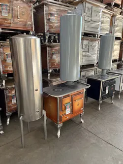

TALLER DE COCINAS A LEÑA EN GALVARINO · DESDE 1986
Restauración y Venta de Cocinas a Leña Tradicionales
Recuperamos la eficiencia calórica, el tiraje y la firmeza de tu cocina a leña. Renovamos cámaras de combustión con hierro resistente y ladrillos refractarios de alta densidad, asegurando un excelente rendimiento de calor y una larga vida útil para tu hogar.
38+ Años
De experiencia en cocinas a leña
Fierro & Refractario
Materiales de alta resistencia térmica
Galvarino Chile
Chacabuco 128 · Trato directo y honesto
Disponibilidad en Taller
Equipamiento Completo

- Diagnóstico estructural para evaluar recuperación o reemplazo
- Reemplazo de piezas desgastadas con planchas de fierro grueso
- Aislamiento térmico reforzado con mortero y ladrillos refractarios
- Traslado a domicilio solo dentro del sector (según cercanía)